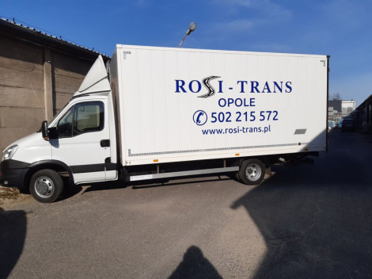
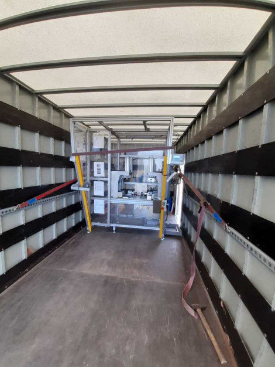
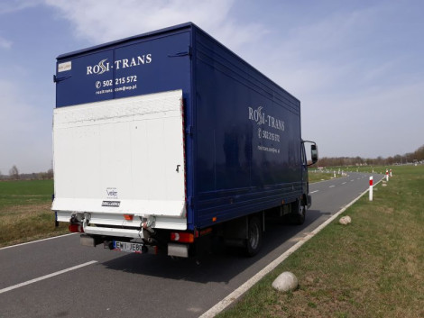
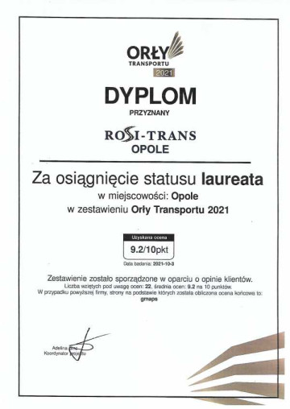
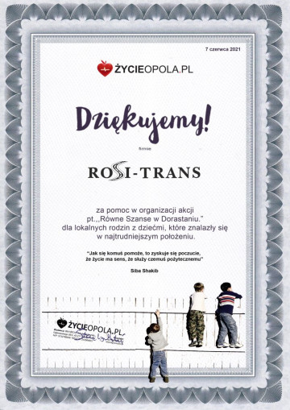

Przeprowadzki mieszkań
Wieloletnie doświadczenie w transporcie towarowym. Kompleksowa obsługa od pakowania po rozładunek.
Wieloletnie doświadczenieProfesjonalny transport mebli i sprzętu AGD w Opolu. Indywidualne podejście do każdego klienta. Atrakcyjne ceny ustalane indywidualnie.

Kontener z windą
załadowczo-wyładowczą
Co oferujemy
Oferujemy szeroki zakres usług transportowych i przeprowadzkowych. Każde zlecenie traktujemy indywidualnie.
Wieloletnie doświadczenie w transporcie towarowym. Kompleksowa obsługa od pakowania po rozładunek.
Wieloletnie doświadczenieAtrakcyjne ceny, ustalane indywidualnie! Profesjonalne przenoszenie sprzętu biurowego i dokumentów.
Ceny indywidualnePięciometrowy kontener z windą załadowczo-wyładowczą. Idealny do transportu towaru sklepowego.
Kontener z windąNa wyposażeniu auta wózek paletowy oraz pasy zabezpieczające ładunek. Bezpieczny transport.
Wózek paletowyZapewniam rzetelne i indywidualne podejście do każdego klienta oraz atrakcyjne ceny.
Indywidualne podejścieUsługi transportowe, przewóz rzeczy, odbiór i dostawa towaru. Szybko i bezpiecznie.
Odbiór i dostawaPotrzebujesz transportu? Zapraszam do współpracy! Profesjonalna obsługa sprzętu wielkogabarytowego.
Sprzęt wielkogabarytowyTanio, szybko, solidnie. Kompleksowe usługi transportowe dla firm i osób prywatnych.
Tanio i szybko

O firmie
Jesteśmy firmą transportową z wieloletnim doświadczeniem. Specjalizujemy się w przeprowadzkach mieszkań, biur, sklepów i magazynów na terenie Opola i okolic.
Nasza flota wyposażona jest w nowoczesne samochody z windą załadowczo-wyładowczą, co pozwala na bezpieczny transport nawet najcięższych przedmiotów.
Pasy zabezpieczające ładunek i profesjonalny sprzęt.
Na miejsce, na czas, na pewno - to nasze motto.
Ceny ustalane indywidualnie dla każdego klienta.
Galeria
Zobacz nasze samochody i sprzęt, którym realizujemy zlecenia transportowe.
Wyróżnienia
Nasze zaangażowanie i profesjonalizm zostały docenione przez klientów i branżę transportową.

Nagroda za najwyższą jakość usług transportowych.

Za profesjonalną i rzetelną współpracę.
Pytania i odpowiedzi
Odpowiadamy na pytania, które najczęściej zadają nasi klienci. Jeśli nie znajdziesz odpowiedzi na swoje pytanie, skontaktuj się z nami.
Cena przeprowadzki ustalana jest indywidualnie i zależy od wielu czynników: odległości, ilości rzeczy do przewiezienia, piętra oraz potrzeby dodatkowych usług. Oferujemy konkurencyjne ceny i bezpłatną wycenę. Zadzwoń pod numer 502 215 572, aby uzyskać dokładną wycenę.
Tak, realizujemy przeprowadzki nie tylko w Opolu i województwie opolskim, ale także na terenie całego kraju. Obsługujemy trasy do Wrocławia, Katowic, Warszawy, Krakowa i innych miast. Skontaktuj się z nami, aby omówić szczegóły.
Dysponujemy pięciometrowym kontenerem z windą załadowczo-wyładowczą, co znacznie ułatwia i przyspiesza załadunek ciężkich przedmiotów. Posiadamy również wózek paletowy i profesjonalne pasy zabezpieczające ładunek. Wieloletnie doświadczenie gwarantuje rzetelność i bezpieczeństwo.
Czas przeprowadzki zależy od wielkości mieszkania lub biura oraz ilości rzeczy. Przeprowadzka małego mieszkania (kawalerka, 1-pokojowe) trwa zazwyczaj 2-4 godziny. Większe mieszkania i domy mogą wymagać całego dnia pracy. Zawsze staramy się działać sprawnie i terminowo.
Oczywiście! Oferujemy zarówno kompleksowe przeprowadzki, jak i pojedyncze usługi transportowe - przewóz mebli, sprzętu AGD, większych zakupów czy odbiór i dostawę towaru. Elastycznie dopasowujemy się do potrzeb klienta.
Dysponujemy profesjonalnymi pasami zabezpieczającymi ładunek oraz materiałami ochronnymi. Meble i delikatne przedmioty są starannie zabezpieczane przed uszkodzeniem. Nasz samochód posiada windę załadowczą, co minimalizuje ryzyko uszkodzeń podczas załadunku i rozładunku.
Tak, specjalizujemy się w przeprowadzkach biur, sklepów i magazynów. Rozumiemy, że dla firm czas to pieniądz, dlatego staramy się minimalizować przestoje w działalności. Oferujemy elastyczne terminy, również w weekendy i wieczorami.
Najszybciej skontaktujesz się z nami telefonicznie pod numerem 502 215 572 lub mailowo na adres rositrans.com@wp.pl. Omówimy szczegóły, ustalimy termin i przedstawimy wycenę. Możesz również wysłać zapytanie przez formularz na naszej stronie.
Masz inne pytanie? Chętnie na nie odpowiemy!
Zadzwoń: 502 215 572Kontakt
Potrzebujesz transportu? Zadzwoń lub napisz - szybko odpowiemy i ustalimy szczegóły.
Zadzwoń, aby omówić szczegóły.
Napisz do nas w każdej sprawie.
Opole i okolice
Działamy na terenie całego województwa.
Elastyczne godziny
Dostosowujemy się do Twojego planu.
Zadzwoń teraz i otrzymaj bezpłatną wycenę transportu. Ceny ustalamy indywidualnie - z pewnością znajdziemy rozwiązanie dla Ciebie!